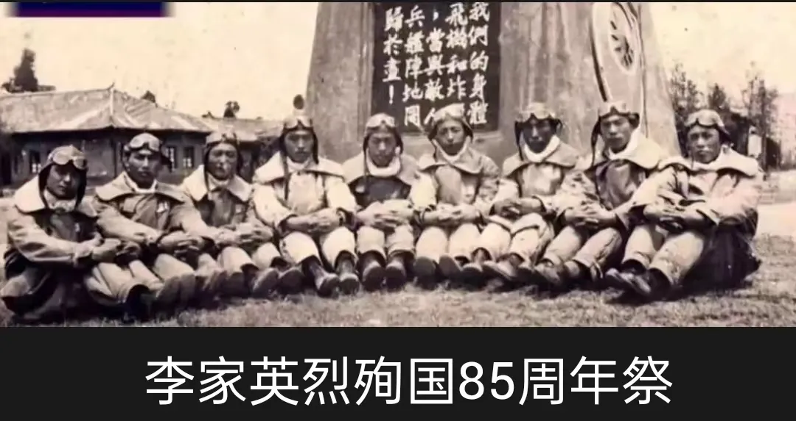

点击图片外区域、按 Esc 或点击右上角关闭 · 手机可双指缩放
点击文中图片可放大查看 · Tap any photo to enlarge

我爷爷李有行的亲弟，国民空军飞行中尉李有幹，于1937年9月18日在上海上空与侵华日军激战，血洒长空，壮烈殉国。九一八是李家祭日。
我爷爷的几本日记，经历了"史无前例"的抄家浩劫，却在十多年之后，又奇迹般地出现在所剩无几的残存"退还物品"中。李有幹牺牲三个月后，我爷爷在北平艺专南渡办学途中，到达湖南时，在他的日记本上写下了长文《忆幹弟》。这篇长文，也就成了唯一记录李有幹的文字资料。这份极其宝贵的家族精神财富，李家将代代相传，永远珍藏。
李有行 · 民国二十六年十二月二十二日 · 湖南常德武陵花园
（连载长文，分段标题为编者所加）
我爱幹弟的勇敢、我爱幹弟的豪爽、我爱幹弟的兴致、我爱幹弟的伤亡！呵，我最可爱的幹弟，我和你何时再见啊！
爸爸在他的回忆录中这样深情地呼唤他的爱弟。
叔叔不仅与我爸的感情最深，他还是我少年时代的偶像，是鏖战长空为国捐躯的勇士，那时我的志向是也能成为飞行员。抗战后期飞虎队叱咤风云，扬威九霄，更助长了我的愿望。
他小我爸爸八岁，弟兄间感情甚笃。爸爸经常忆及自己在十五岁时做了件很对不起弟弟的事：两人为小事相争，作哥哥的竟用手中铅笔戳向弟弟，结果在弟弟额角上留下一处终身不褪的黑痕。而弟弟没有还手也不哭闹，只是若无其事的默默的离开，事后做哥哥的悔恨得痛哭一场，从此更深爱弟弟。
后来的事还是让我爸爸自己来讲吧！（摘录自编者父亲李守中回忆录《渔舟唱晚》）
我要表现我是如何热诚的爱他，于是我带他一同去照像，带他到东交民巷去看那些整洁的道路，希奇的洋人，美丽的洋房，还带他去看那雄伟的城楼和沿城走着的火车，尽我所知的讲解给他听，当我看出他那兴奋好奇的神情，我亦快活起来。
我还带他到香山慈幼院去，一则看山景，再则参观慈幼院的环境如何美好，那是颇值得纪念的一次远足，我们动身太迟了，吃过午饭已是过午两点，又是阴历年头上，天黑得极早，我鼓舞着他的勇气居然走到玉泉山，看他实在疲倦了我就背他一段又讲些鼓励他的话，甚至搜索枯肠找些故事讲给他听，终于爬上香山看见了慈幼院，随后一切都消逝在昏暗中了。我们唱着歌说着话，相互提携着快一阵慢一阵的走回城去，在海淀还买几个烧饼分着边吃边走，他不喊冷也不说累，当走到西直门时已近午夜，城门早已关闭，只好进到城外驻警的小屋内等待天亮开门。我脱下外衣给他盖好，他满面兴致的熟睡了，我从他那满足的神情中得到了极大安慰。事后我自怨不该使八九岁的他受那样的辛苦，但是他除去感激我引导他游玩之外，绝无丝毫怪我令他吃苦之意，幹弟可谓勇了！
夏日早晨，我每每出城散步回来才去上学，暑假中更是天天清晨出城，幹弟一次自告奋勇陪我出城，沿途听我讲那些农作物，和我一起偷吃过一些黄瓜白薯，经钓鱼台罗道庄绕至八里庄返城，路过倒影庙我就带他去见哈尔定先生（我爷爷少时，因画画结识的一位英国外交官），得到桃子吃他就满意极了，我亦快活之至，其后我们每借口去月坛买菜出城去玩。
记得一次父亲发现丢了什么东西，把幹弟和外甥曾学广罚跪着审问。过是幹弟犯的，享受却是两人与共。我外甥吃不住罚就供出了是幹弟所为，父亲狠狠将幹弟鞭责一顿，不给吃饭穿衣，还须照旧写字念书。幹弟吃得起苦，他不求饶不求情，更不呜咽，我看着大为不平，一面去将外甥责备一番，一面去幹弟屋里陪他受罚，苦劝他改过，甚至哭着告诉他我幼时犯过与他相似的过，受过相似的罚，他亦似稍稍动容，但随着就不介意了。待我再去看他时，他并未写字读书，却专心一意的在画静物写生！我当时多么佩服他、敬爱他呀！他多么兴致，多么洒脱啊！他绝不怪外甥不义，他能独做独当，不再同外甥共同犯事，外甥颇知改过，从此像大人却亦更像外人了。
我怂恿着把幹弟送往香山慈幼院去附学，父亲勉强答应了。我为建议成功而高兴，幹弟更是说不尽的快活。几乎每个星期日我都骑车去看他，他望见我的时候真象久别重逢的情人一样老远跑过来接我，引我去看东看西，介绍的他同学和老师，若是我要作画，他就情愿为我拿水盂，一次我去画雪景，他不仅不嫌手冷，还满面荣光，满面兴致！在香山他学会了滑冰、翻墙，爬树这类山野小孩的本领，尤其是滑冰成绩最好！
一年深秋，慈幼院开恳亲会，父母亲和我应邀上山赴会，那亦是我家庭中最少有的一次短途旅行吧，我是这次旅行的促成者，同时又是向导者，感到了特别的快乐！香山园，碧云寺，游后就去了慈幼院，父母兄弟聚坐在一起，亲其所亲的纯爱，相互的心灵感应，真是我此生最宝贵的一段回忆了，我们住香山一宿，次日下午才返回城内。
中间有七八年，我和幹弟分别了，当我将从美专毕业，为着争取出国努力时常常和父亲意见相左，每每冲突到挨打哭闹。幹弟似乎不了解这事情，直到我争得父亲所给的旅费，即日登程远行之时，幹弟才有暗中羡慕我离家的神情。我们没有留恋不舍的情意，这大概就是兄弟之爱的界限吧！从此之后偶尔通信几次而已。
父亲去世我赶回奔丧的那年夏天，只感到幹弟长大成人了，同时似乎手足无措，对我生疏了。我们短暂相处便又分离，一去三年，其间幹弟竟远走南洋历练一次归来。
这是由大哥来信和回家后听母亲讲的：大约是民国十八年的事情，那时家中只母亲幹弟两人。幹弟一向对读书缺乏兴味，父亲去世后他爱玩起来就更是没有忌惮了，特别喜爱运动和游戏，偶尔作画成绩亦颇可观。这年忽发奇想，利用母亲出门的空隙，将家中活期存折窃到手。母亲归来还看见他正在规规矩矩的写字，写完字他向母亲说去看同学某人，殊不知此一去就不见回来。母亲知道有异，往寻存折果然不见，一时急得无法，四处托人寻访都称不知，一方面痛惜失去存款，另方面更悬心他勿因此钱送命。焦心积虑两月余才接他由新加坡寄回家信，称他和一同学赴南洋谋生，沿途平安，现抵达新埠尚无正式工作。
原来他早图谋离家自立，耳闻某同学亲戚在南洋麻坡有橡胶园，其同学仅能介绍工作，幹弟求自立心切，便慨然愿意承担两人路费，共同计议停当，居然一切顺利到达目的，但带出的七百余元已全耗尽，而且当时南洋橡胶工业因世界金融危机而衰败。同学的亲戚力劝他二人返家，那位同学果然自行回国了，而幹弟犹苦撑半年之久，每天正式工作两三小时，收入不足饮食之用，只得另做厨役洗衣等工才勉强维生。其后又教读国语数月，生活才略轻松一些。但是他确信此处前途有限，才领取家中设法寄往的路费返家。
幹弟这番冒险旅行对母亲自是忍心太甚，但对他自己确有许多好处，第一身体炼得强实了，知道自立谋生的困难，晓得人言的不可靠，经历种种人情世故还在其次了，胆量更大眼光更广亦是附带的收获。
（未完待续——详见下篇《杭州岁月，笕桥英姿》）
点击图片外区域、按 Esc 或点击右上角关闭 · 手机可双指缩放